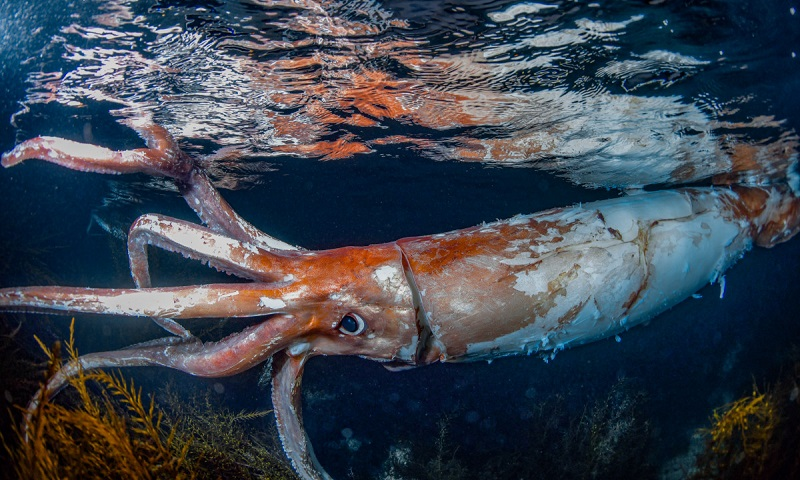
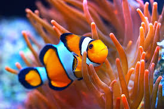

Peso: cerca de 450 kg.
Comprimento: até 13 m (incluindo tentáculos).
Cauda: não possui; termina em nadadeiras.
Comprimento: até 13 m (incluindo tentáculos).
Cauda: não possui; termina em nadadeiras.
Lula-gigante

Peso: de 45 kg a 300 kg.
Comprimento: entre 1 m e 2 m.
Cauda: pequena, usada para direcionar o movimento.
Comprimento: entre 1 m e 2 m.
Cauda: pequena, usada para direcionar o movimento.
Foca

Peso: apenas alguns gramas.
Comprimento: até 11 cm.
Cauda: pequena, usada para natação.
Comprimento: até 11 cm.
Cauda: pequena, usada para natação.
Peixe-palhaço